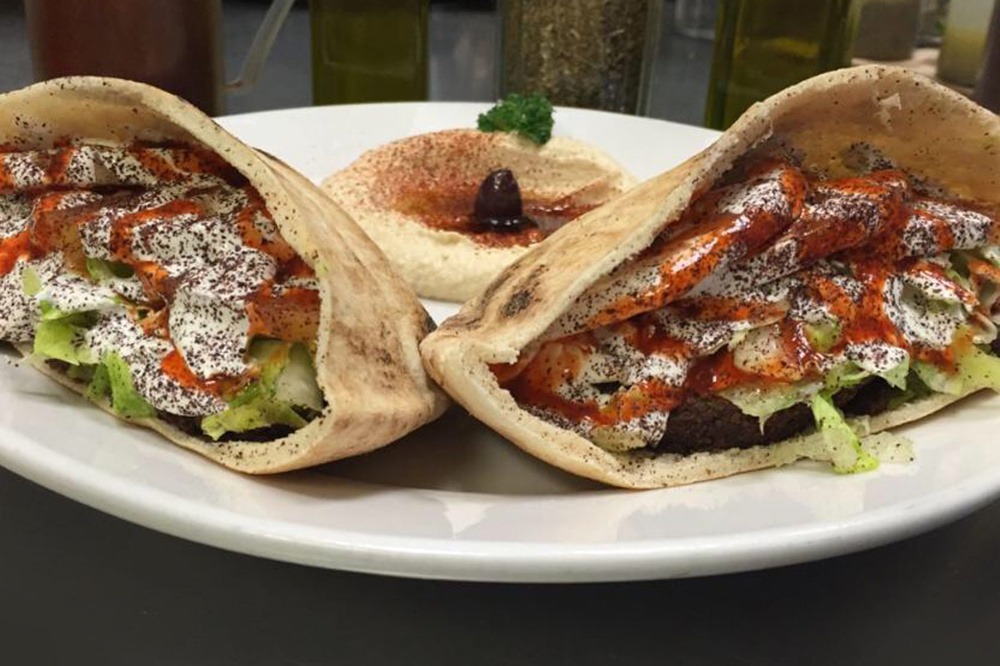

- 
About Zabak's Mediterranean Café
Built on tradition, Zabak's Mediterranean Café is a combination of young urban Houston with old world recipes and flavors. Siblings Peter, Sandra and Donald Zabak have brought family expertise to the table as the trio grew up in the restaurant business with family-owned Mama’s Po-Boy. Their parents, George and Karimeh Zabak, of Palestinian descent, operated the deli for nearly three decades and served some Mediterranean favorites on their menu, including their signature falafel sandwich. Continuing the legacy, this second generation family-run Café features the authentic and flavorful Middle Eastern recipes their Palestinian parents cooked at their family’s eatery and at home.
We Cater! Just Ask.
Here at Zabak's, we are dedicated to providing satisfying catering services! We offer a variety of different catering packages and menu items that will surely meet your needs. Our catering menu is prepared on site with the freshest ingredients and no party is too big for Zabak's! Whether it is a private gathering of close friends, a working lunch, or a large company picnic- we have your event covered! Call 713-977-7676 for more information.
What Customers Are Saying...
“If this is what vegetarians eat, I'm going vegetarian and eating falafel for life!!”
"The food is dynamite. We happened to walk into this place since my GF and I love trying new and random places. The lady at the counter was so informative and recommended the falafel, the chicken kabob and chicken shawarma platters. Food tasted delicious."
"Quick, easy, and always delicious. The owners are great and welcome everyone with a smile. I will admit I've only had the falafel sandwich, but it's so great I am fearful of straying. The spicy sauce is a must, more spice than heat. It brings everything together."
"This is absolutely one of my favorite places to eat. The food and the staff are amazing! I eat there at least once a week. Everyone greets you with a smile and Sandra always offers tips for the less adventurous eaters like myself. Try it and you'll be hooked!"
"This is the best Mediterranean food I have had in Houston in a while! First off, I think it's awesome to see siblings running a business together. The fact that I can get a literal taste of their family's work together is even better!"
"This is my first time here but I've already fallen in love with the place! As soon as I walked inside, I noticed it is a small place but very organized and clean!! The service was great! The food was great and very affordable! I would highly recommend Zabak's!! "
"OMG...the food here is fresh and full of flavor. Had the gyro plate with baba ghanouj and a cucumber salad. Fresh, crisp and delicious!! I'm definitely going to be here once a week. Friendly service at the counter and great food!!"
What The Press Is Saying
Houston Chronicle
“Critic’s Picks”—Featured Restaurant
Houston Press
"Best of Houston” Multi-Year Recipient. Voted #1 Top 5 Budget Lunch Spots in the Galleria
Travel + Leisure
"America's Best Sandwiches" List - Featured as No. 25
My Table
“The Ultimate Food Lover’s Guide to Houston”—Featured Restaurant
Contact Zabak's
- 5901-G Westheimer Rd Houston, TX 77057
- 713-977-7676
- Hours: Mon-Sat 11 a.m.- 8 p.m. Closed on Sunday